Pizza Shop
Reimagined in-store pizza ordering as a playful kiosk experience, built from physical hardware to hand-drawn interface.

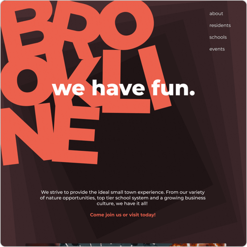
Bringing this small town's playfulness, family-oriented values, and taste of adventure to your screen with this website redesign.
Narrowing in my sights on a small town website redesign, I turned to the town of Brookline, New Hampshire. How could the town's heavy emphasis on community-building, their school district, and the outdoors be translated into their website?
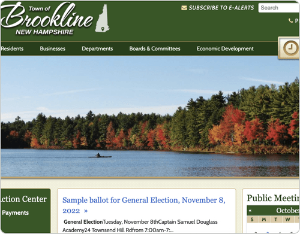
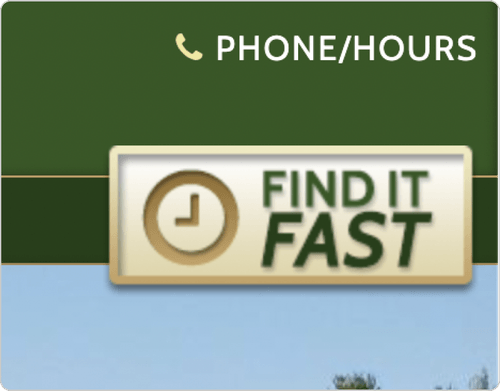
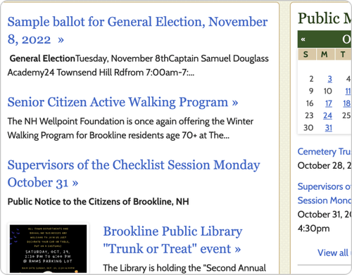
To figure out where to start, I conducted a comparative analysis of other town and city websites. I analyzed both government and tourist sites to create a more comprehensive approach while keeping the types of content currently on Brookline's website.
I analyzed users' workflows on the website. With Brookline heavily emphasizing its school system and family-oriented communities, I prioritized this in the restructuring of the content.
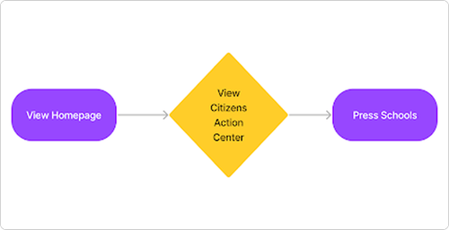
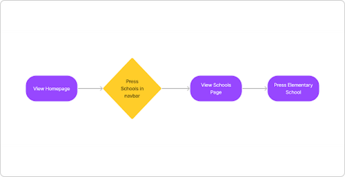
To expand on the user flows, I sketched out several iterations of how to organize each page. I explored common UI patterns identified through the comparative analysis, including quick links to high-traffic pages.
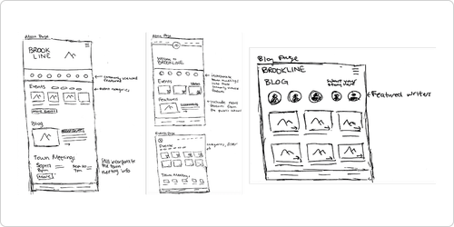
As I digitized my sketches into wireframes, I continued to iterate on the low-fidelity wireframes, refining the written content from the current website. These eventually led to medium-fidelity wireframes that began to explore basic shapes and asymmetrical layouts.

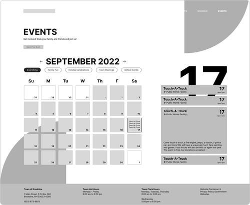
Based on the comparative analysis, I knew I had to leave a bold, memorable impression — either catering toward fun and play to represent the large population of families, or leaning into the nature scene. I explored all of these directions, and ultimately landed on "Asymmetric & Earthy": it highlights the playfulness of a family-oriented community while hinting at nature with an earthy brown palette.
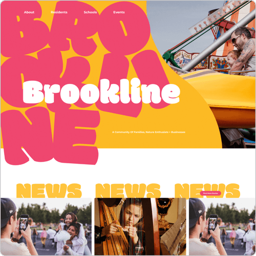
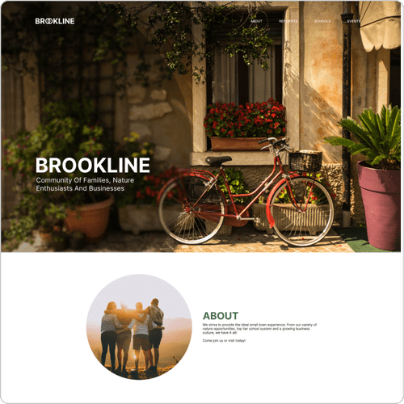
After landing on the "Asymmetric & Earthy" direction, I continued to build out the rest of the pages in this visual treatment. I considered different ways to convey a clear text and navigation hierarchy to improve on the original website's navigation.
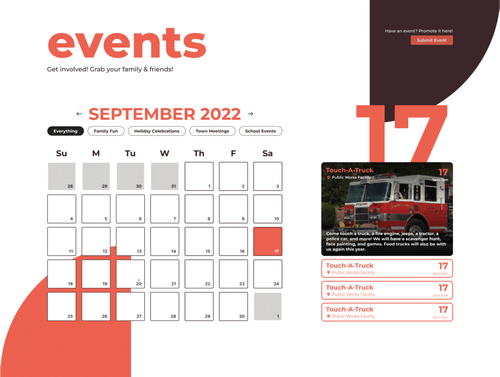
While working on the pages, I also explored different micro-animations to add character and incorporate more fun into the design.
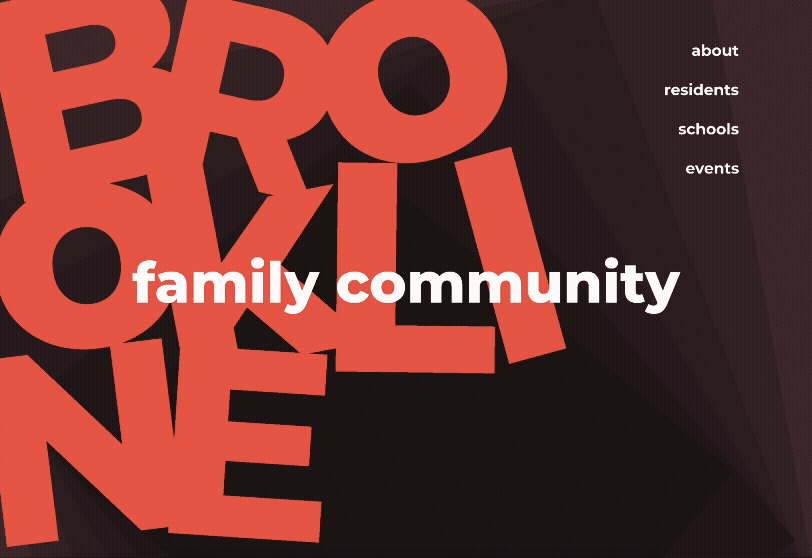
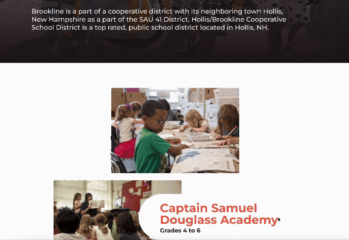
After lots of exploration, the website redesign was completed. It included a clear visual identity representative of the town's community and population, memorable interactions through micro-animations, and a clear hierarchy.